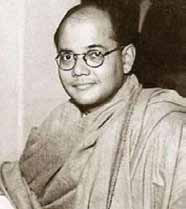
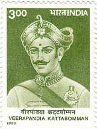
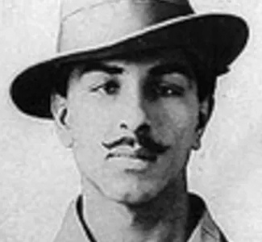

Prabhakaran's Character and Leadership
Prabhakaran's Character and Leadership
Jaffna Monitor hellojaffnamonitor@gmail.com 19 Prabhakaran's Character and Leadership At that time in 1977, I had not joined the Liberation Tigers of Tamil Eelam (LTTE). Our meetings usually happen at public places like temples, bus stands, and libraries. When we met at the bus stand, Prabhakaran would arrive on a bicycle and take me with him, and we would chat while peddling. Prabhakaran and I became close to the extent that he would leave his gun at my house when he visited. He trusted me to that level. Prabhakaran's Admiration for Historical Figures and Ideals of Martyrdom Prabhakaran possessed a laudable quality: an eagerness to learn and a deep passion for reading. He was influenced by and considers Bhagat Singh, Veerapandiya Kattabomman, and Subhas Chandra Bose his role models. He had a particular admiration for Veerapandiya Kattabomman. However, I always viewed Kattabomman as unwise. I frequently debated this with Prabhakaran, arguing that true bravery would have been for Kattabomman to regroup his forces and continue the fight rather than face execution for defying the British tax demands. Prabhakaran, however, did not share this view. He passionately believed in the nobility of martyrdom and the honour of dying on the battlefield. He wished to be remembered as a heroic figure in Tamil history, akin to Veerapandiya Kattabomman. In 1987, after the Indian army's arrival in Sri Lanka, Prabhakaran many times said to me, The Abandoned Regal Theater in Jaffna, a Victim of War Teenage Prabhakaran
Jaffna Monitor hellojaffnamonitor@gmail.com 20 "It's not wrong for a race to perish fighting for its freedom." This shocked me. I argued with him: Are we fighting to live or to annihilate our race and ourselves? His belief that a race can die for freedom persisted until the end. He lacked thoughts on sustaining the liberation struggle and ensuring survival. The Tamil literary books he read in his early years influenced his mindset. These books glorified dying in battle, which resonated with him. During the 70s and 80s, Prabhakaran, other LTTE members, and I regularly frequented the Regal or Rio theaters for the first and second screenings. We had a keen interest in films related to war, history, westerns, and law & order. Hollywood movies often reached Sri Lanka late, premiering in Colombo before arriving in Jaffna. I watched the 1970 film 'Patton' at Regal theaters well before meeting Prabhakaran. The film, portraying American General George S. Patton, includes his famous quote during a speech to the 6th Armored Division on May 31, 1944: 'No bastard ever won a war by dying for his country. He won it by making the other poor dumb bastard die for his country. Prabhakaran possessed many commendable qualities. He was dignified in his conduct, and I regard him as a true gentleman. I never heard him insult or harshly criticize anyone. However, he was stubborn, adhering to his own inflexible beliefs, akin to the saying, "My rabbit has three legs." He was not receptive to differing viewpoints. Over time, he developed the conviction that anyone not actively contributing to the LTTE was a betrayer. Initially a liberation fighter with a character of comradeship, he gradually believed in his totalitarian decisions. Prabhakaran's repeated errors in judgment and misguided decisions led to the unnecessary loss of many young lives and civilians. Thousands were maimed, suffering life-altering injuries, tragedies that could have been avoided. It's important to acknowledge that the Sinhalese population also endured loss of lives and considerable suffering. As an individual, Prabhakaran had limited knowledge and a lack of foresight. In my opinion, he fell short in his role as a leader. True leadership carries immense responsibility, particularly when it involves thousands of young people who trust in and commit to the cause, often at the cost of their lives. Prabhakaran failed to fulfill this vital duty, which is my most significant criticism of him. Bhagat Singh Veerapandiya Kattabomman featured on a 1999 Indian stamp Netaji Subhas Chandra Bose


